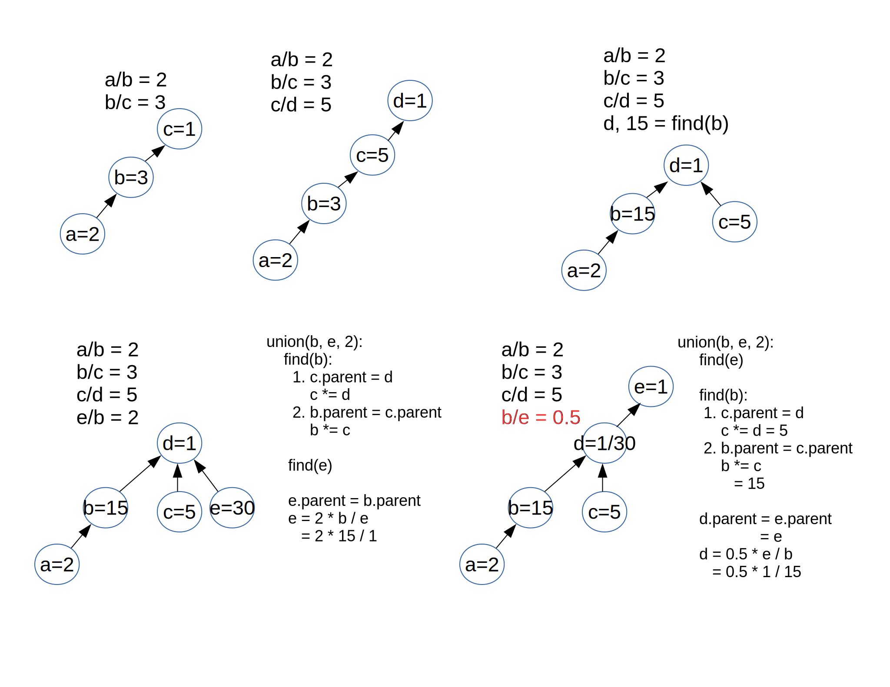

LeetCode Problem Notes¶
DSU¶
Problems:
About DSU (find/union)
See LeetCode solution, approach 2 & the video tutorial.
Problem 399 goes further based on DSU algorithm. Here is a detailed explanation of DSU solution for problem 399 Evaluate Division.
Problem 399 description:
Given an array of variable pairs equations and an array of real numbers values, where equations[i] = [Ai, Bi] and values[i] represent the equation
Ai / Bi = values[i].
Each Ai or Bi is a string that represents a single variable.
Also given some queries, where queries[j] = [Cj, Dj] represents the j-th query, find the answer for Cj / Dj = ?.
Return the answers to all queries. If a single answer cannot be determined, return -1.0.
Example 1:
Input:
equations = [["a","b"],["b","c"]],
values = [2.0,3.0],
queries = [["a","c"],["b","a"],["a","e"],["a","a"],["x","x"]]
Output:
[6.00000,0.50000,-1.00000,1.00000,-1.00000]
Explanation:
Given: a / b = 2.0, b / c = 3.0
queries are: a / c = ?, b / a = ?, a / e = ?, a / a = ?, x / x = ?
return: [6.0, 0.5, -1.0, 1.0, -1.0 ]
Solution:
To find a proper way to solve the problem, let’s focused on the equation relation first. If \(\frac{a}{b}=2, \frac{c}{b}=3\), we just have a tree to get \(\frac{a}{c}=\frac{\frac{a}{b}}{\frac{c}{b}}\):
b=1
/ \
a=2 c=3
If a, c in the same tree, they will have a common ancestor, which is equivalent of finding a relation between a & c.
But tree is expensive to travel each time. If all relationship like a vs. c is bridged via a common denominator, the tree relation can be flattened. E.g. \(\frac{a}{b}=2, \frac{b}{c}=3\) initially can be a tree like:
c=1
/
b=3
/
a=2
Obviously \(\frac{a}{c}=6\) can be got from the path. But if we re-construct it as a DSU, the tree now look like this:
c=1
/ |
/ b=3
a=6
That’s what the Lee215’s find() function doing. See A union-find without ranking.
Example:
Note: Almost all DSU problems have DFS/BFS solution. Let’s focused on DSU.